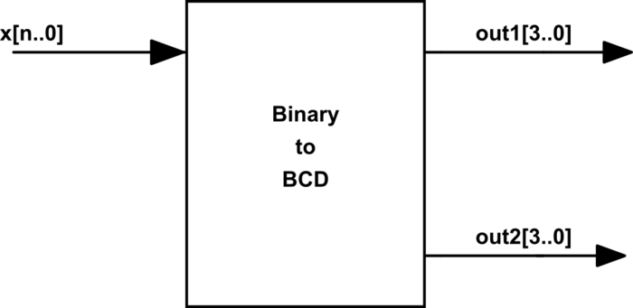
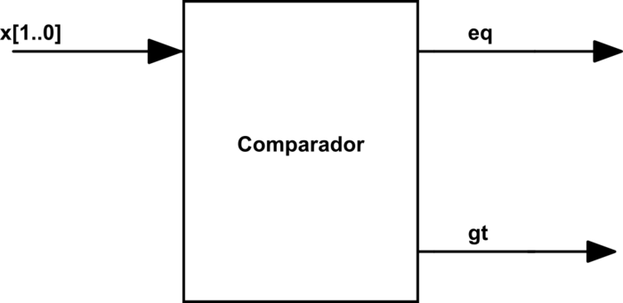
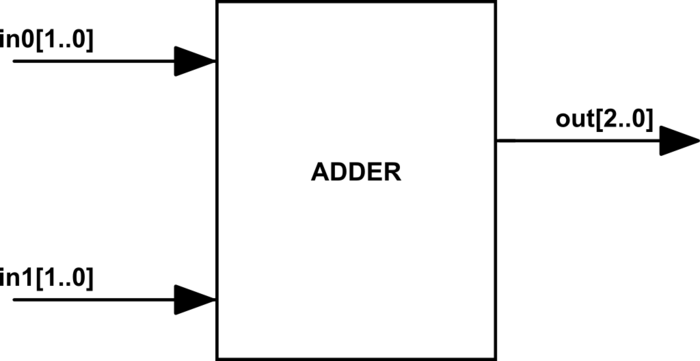
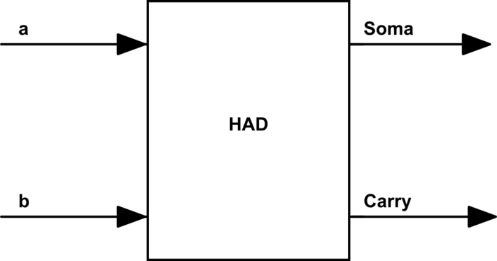

EleSis
Sumário
- Álgebra Booleana
- Tabela Verdade
- Equações booleanas e suas operações
- Teoria Componentes
- Enconders
- Teoria Aritmética Binária
- Teoria Lógica Sequencial
- VHDL
Algebra Booleana
Na álgebra booleana, as variáveis podem assumir apenas dois valores: 0 ou 1.
Tabela Verdade
- A tabela verdade é uma tabela que mostra todas as combinações possíveis de valores de entrada e a saída correspondente para uma equação booleana.
- A tabela verdade vai ter \(\mathbf{2^n}\)
linhas, onde
né o número de variáveis de entrada.
Equações booleanas e suas operações
As equações booleanas são expressões matemáticas que descrevem o comportamento de um circuito digital. Elas podem possuir uma ou mais entradas e apenas uma saída.
-
Not
A operação de not é uma inversão da entrada: se a entrada (A)do operador for 1 sua saída (X) será 0 e vice versa.
| Entrada A | Saída(X) |
|---|---|
| 0 | 1 |
| 1 | 0 |
Equação: X = \(\bar{A}\)
-
AND
A operação de and pode ser entendida como uma multiplicação: A saída (X) só é verdadeira se as entradas A e B forem verdadeiras: 1 $\cdot$ 1 = 1
| Entrada A | Entrada B | Saída(X) |
|---|---|---|
| 0 | 0 | 0 |
| 0 | 1 | 0 |
| 1 | 0 | 0 |
| 1 | 1 | 1 |
Equação: X = A $\cdot$ B
-
OR
A operação de or pode ser entendida como uma adição: A saída (X) só é verdadeira se pelo menos uma das entradas A ou B for verdadeira: 1 + 0 = 1
| Entrada A | Entrada B | Saída(X) |
|---|---|---|
| 0 | 0 | 0 |
| 0 | 1 | 1 |
| 1 | 0 | 1 |
| 1 | 1 | 1 |
Equação: X = A + B
-
NAND
A operação de nand é a inversão da operação and: A saída (X) só é verdadeira verdadeira quando as entradas A e B são falsas: 0 $\cdot$ 0 = 1
| Entrada A | Entrada B | Saída(X) |
|---|---|---|
| 0 | 0 | 1 |
| 0 | 1 | 1 |
| 1 | 0 | 1 |
| 1 | 1 | 0 |
Equação: X = \(\overline{A \cdot B}\)
Teoria Componentes
Componentes Digitais
Os componentes digitais são os blocos de construção básicos de circuitos digitais. Eles são usados para realizar operações lógicas e aritméticas.
-
Portas Lógicas
S <= A and B; S <= A nand B; S <= not (A and B) S <= A or B; S <= A nor B; S <= not (A or B); S <= A xor B; S <= (not A);
-
Multiplexado(MUX)
O MUX é um componente que possui n entradas e uma saída q, um sinal chamado de seletor sel seleciona qual entrada irá ser copiada para a saída.
As entradas n e a saída q podem ser binárias ou vetor de tamanho m.
entity mux is port(
in0 : in std_logic;
in1 : in std_logic;
sel : in std_logic;
o : out std_logic);
end entity;
Tabela Verdade do MUX de 2 entradas
| In 0 | In 1 | sel | out |
|---|---|---|---|
| 1 | X | 0 | 1 |
| X | 0 | 1 | 0 |
| 0 | X | 0 | 0 |
| X | 1 | 1 | 1 |
Observação
A tabela verdade do mux de 2 entradas possuir \(\mathbf{2^3}\) linhas (o seletor conta como entrada), totalizando 8 linhas. Porém para simplificar, utilizamos o X que significa tanto faz (0 ou 1), logo cada linha que possui 1 seria expandida para duas linhas.
Tamanho do seletor
| Quantidade de entradas (n) | Tamanho do seletor |
|---|---|
| 2 | 1 |
| 3 | 2 |
| 4 | 2 |
| 5 | 3 |
| 8 | 3 |
Tamanho do seletor = $ \log_2(\text{size}(n))$
-
Demultiplexador(DEMUX)
O Demux possui uma entrada in e n saídas q, o demux conecta a entrada a alguma das saídas, sendo controladas pelo sinal de seletor sel.
entity demux is
port(
in0 : in std_logic;
sel : in std_logic;
out0 : out std_logic;
out1 : out std_logic
);
end entity;
Tabela Verdade do DEMUX de 2 saídas
| In 0 | Sel | Out 0 | Out 1 |
|---|---|---|---|
| 1 | 0 | 1 | 0 |
| 1 | 1 | 0 | 1 |
| 0 | 1 | 0 | 0 |
| 0 | 0 | 0 | 0 |
Enconders
Enconders são componentes que codificam uma entrada em uma saída de outro formato.
-
Binary-coded Decimal (BCD)
É uma forma de codificação de números inteiros em binário na qual utiliza-se para cada dígito de um número inteiro, 4 bits em binário.
| Decimal Number | BCD 8421 Code |
|---|---|
| 0 | 0000 0000 |
| 1 | 0000 0001 |
| 2 | 0000 0010 |
| 3 | 0000 0011 |
| 4 | 0000 0100 |
| 5 | 0000 0101 |
| 6 | 0000 0110 |
| 7 | 0000 0111 |
| 8 | 0000 1000 |
| 9 | 0000 1001 |
| 10 (1+0) | 0001 0000 |
| 11 (1+1) | 0001 0001 |
| 12 (1+2) | 0001 0010 |
| continua | em blocos de 4 bits |
Diagrama

entity binaryToBCD is
port(
x : in std_logic(4 downto 0);
out0 : out std_logic_vector(3 downto 0); -- Unidade
out1 : out std_logic_vector(3 downto 0) -- Dezena
);
end entity;
Observação: O maior valor que um bloco de 4 bits do BCD assume é o 1001 que é referente ao número inteiro 9.
-
Gray Code
O código gray é uma forma de codificar números binários, nessa codificação apenas um bit muda por vez.
| Código decimal | Código Binário | Código Gray |
|---|---|---|
| 0 | 0000 | 0000 |
| 1 | 0001 | 0001 |
| 2 | 0010 | 0011 |
| 3 | 0011 | 0010 |
| 4 | 0100 | 0110 |
| 5 | 0101 | 0111 |
| 6 | 0110 | 0101 |
| 7 | 0111 | 0100 |
| 8 | 1000 | 1100 |
| 9 | 1001 | 1101 |
| 10 | 1010 | 1111 |
| 11 | 1011 | 1110 |
| 12 | 1100 | 1010 |
| 13 | 1101 | 1011 |
| 14 | 1110 | 1001 |
| 15 | 1111 | 1000 |
-
Comparador
Comparadores são componentes que podem possuir diversos atributos, tais como comparar:
- se duas entradas são iguais
- se a entrada A é maior que entrada B
- se entrada A é igual a zero
- ...
A seguir um exemplo de um comparador que possui apenas uma entrada x[1..0] e compara se essa entrada é igual a zero (eq) (x == 0), ou se é maior que zero (gt) (x > 0).
| X (Inteiro) | X (Binário) | EQ | GT |
|---|---|---|---|
| 0 | 00 | 1 | 0 |
| 1 | 01 | 0 | 1 |
| -1 | 11 | 0 | 0 |
| 2 | 10 | 0 | 1 |
Diagama

entity COMPARADOR is
port(
x : in std_logic_vector(1 downto 0);
eq : out std_logic;
gt : out std_logic
);
end entity;
-
Somadores
Os somadores são componentes que realizam a soma de dois números binários.
Um somador de dois vetores de dois bits cada possui o seguinte comportamento:
| in0 | in1 | out |
|---|---|---|
| 00 | 00 | 00 |
| 00 | 01 | 01 |
| 01 | 01 | 10 |
| 10 | 01 | 011 |
| 10 | 11 | 101 |
| 11 | 11 | 110 |
Diagrama

entity ADDER is
port(
in0 : in std_logic(1 downto 0);
in1 : in std_logic(1 downto 0);
o : out std_logic_vector(2 downto 0)
);
end entity;
Teoria Aritmética Binária
-
Half-Adder (HAD)
Half-Adder (HAD) é um circuito digital capaz de somar dois bits (a e b), tem como resultado o valor da soma e do carry, como ilustrado a seguir:
Tabela Verdade do Half-Adder
| a | b | carry(out) | soma(out) |
|---|---|---|---|
| 0 | 0 | 0 | 0 |
| 0 | 1 | 0 | 1 |
| 1 | 0 | 0 | 1 |
| 1 | 1 | 1 | 0 |
Diagrama

E é implementado em hardware da seguinte maneira:

-
Full-Adder (FAD)
Full-Adder (FAD) é um componente digital capaz de somar três bits (a, b e c), tem como resultado o valor da soma e do carry.
Tabela Verdade do Full-Adder
| a | b | c | carry(out) | soma(out) |
|---|---|---|---|---|
| 0 | 0 | 0 | 0 | 0 |
| 0 | 0 | 1 | 0 | 1 |
| 0 | 1 | 0 | 0 | 1 |
| 0 | 1 | 1 | 1 | 0 |
| 1 | 0 | 0 | 0 | 1 |
| 1 | 0 | 1 | 1 | 0 |
| 1 | 1 | 0 | 1 | 0 |
| 1 | 1 | 1 | 1 | 1 |
Diagrama

E é implementado em hardware da seguinte maneira:

-
Somador
Utilizando o FAD somos capazes de realizar um somador de dois vetores binários. Para isso, teremos que utilizar um full-adder para cada bit desse nosso vetor.
Por exemplo: se formos criar um Somador capaz de somar dois vetores de 4bits, necessitamos utilizar 4 FAD para isso com a ligação descrita a seguir:

Nesse diagrama, estamos realizando a soma ente os vetores A(3 downto 0) e B(3 downto 0)que resulta em um outro vetor S(3 downto 0) e um carry C4.
Teoria Lógica Sequencial
Na lógica sequencial, o estado anterior das entradas influencia na saída, ou seja, essa lógica possui uma memória.

Sistemas sequências são em sua grande maioria combinados com sistema síncrono, onde todos o circuito digital opera em um determinado ritmo, esse sinal é conhecido como clock do sistema.
Circuitos biestáveis
Os circuitos biestáveis permancem em um dos dois estados binário (0 ou 1) enquanto estiver energizado. Eles são usados para armazenar e recuperar os estados dos bits dos computadores.
-
latch SR
O latch SR é um circuito biestável composto de duas portas NOR que armazenam um valor simples.

Neste circuito normalmente as entradas S e R, conhecidas como Set e Reset, ficam em nível baixo. Enquanto estiverem assim o valor das saídas Q e \(\overline{Q}\), que é sempre o inverso do Q, se mantem inalterados. Se o nível do S subir (1) a saída Q fica em nível alto, ou podemos dizer 1, já se o nível do R, Q fica em nível lógico baixo, ou seja 0.
Tabela Verdade do Latch SR:
| S | R | Q | \(\overline{Q}\) |
|---|---|---|---|
| 0 | 0 | Armazenado | Armazenado |
| 1 | 0 | 0 | 1 |
| 0 | 1 | 0 | 1 |
| 1 | 1 | metaestável | metaestável |
metaestável: Indica que a saída pode ser 0 ou 1, e que não podemos prever qual será.
-
Latch Tipo D
O latch tipo D é um circuito biestável, nesse caso o circuito mantem o valor da entrada de Dados D enquanto a entrada de Enable E estiver em nível alto, se o sinal E for para nível baixo o circuito não muda de estado.

Tabela Verdade do Latch D:
| E | D | Q | \(\overline{Q}\) |
|---|---|---|---|
| 0 | 0 | Armazenado | Armazenado |
| 0 | 1 | Armazenado | Armazenado |
| 1 | 0 | Copiada Entrada D: 0 |
Copia Entrada D negada: 1 |
| 0 | 1 | Copiada Entrada D: 1 |
Copia Entrada D negada: 0 |
Clock
O clock é um sinal elétrico periódico utilizado para sincronizar sistemas digitais, utilizado em todo circuito síncrono, serve como o 'baterista' da banda, dando o ritmo de execução para a eletrônica. A cada novo clock (instante que ocorre uma mudança no sinal 0 -> 1), o sistema começa uma nova operação. O sinal do clock é geralmente periódico e de modulação 50% (50% em alto e 50% em baixo):

-
Frequência: F = \(\frac{1}{L}\)
-
Clock de 3Ghz São 3 bilhões
3.000.000.000de bordas(0 -> 1)em um segundo!! Imagine que a cada borda, uma operação é realizada no computador, são 3 bilhões de operações em um único segundo.... -
Overclock:
Nessa técnica, aumentasse o clock para uma frequência na qual o sistema não foi projetado para operar, consequências disso são:
- Possíveis erros de processamento (dado que parte do circuito pode ser mais lento que o \(\frac{1}{L}\))
- Superaquecimento do chip, já que a tecnologia atual utilizada para fabricação de componentes eletrônicos (MOSFET) 'gasta' energia a cada clock. Com um aumento no clock, mais energia é gasta por segundo
-
Borda:
Nem todo sistema digital trabalha com borda de subida (rising_edge) (0 -> 1), outras opções são:
- borda de descida
(falling_edge): 1 -> 0. double data rate (DDR): Uma nova mudança a cada borda, subida e descida. (Dai que vem o nome da memória DDR4 do seu computador!)
- borda de descida
Flip-Flop
Flip-Flop (FF) é um circuito similar ao LATCH porém síncrono, ou seja, a mudança na saída (Q) só ocorre na borda do clock.
-
Flip-Flop tipo D:
O Flip-Flop tipo D possui as seguintes portas:
-
D:entrada do de Dado Q:saída do dado copiado- \(\overline{Q}:\) saída do dado copiado negado
CLK:entrada do clock

Toda vez que o ocorre uma borda de subina no clock, o sinal que está na entrada D é copiado para a saída Q, conforme diagrama a seguir:

Tabela Verdade do Flip-Flop D:
| D (in) | CLK (in) | Q (out) |
|---|---|---|
| 0 | 0 | Q* |
| 1 | 1 | Q* |
| 0 | ^ | 0 |
| 1 | ^ | 1 |
-
Observação:
^: indica que a borda de subida do clockQ*: indica que o valor deQé o mesmo que o valor anterior
Clear e Preset
FF do tipo D podem possuir mais dois sinais de controle:
clearepreset. O sinalclearfaz com que a saídaQvá para0independe da entadaDe doclock. O sinalpresetfaz com que a saídaQvá para1independente da entradaDe doclock.
Tabela Verdade do Flip-Flop D com Clear e Preset:
| D (in) | Clear | Set | CLK (in) | Q (out) |
|---|---|---|---|---|
| X | 0 | 0 | X | Q* |
| X | 1 | 0 | X | 0 |
| X | 0 | 1 | X | 1 |
| 0 | 0 | 0 | ^ | 0 |
| 1 | 0 | 0 | ^ | 1 |
VHDL
VHDL é uma linguagem de descrição de hardware, utilizada para descrever circuitos digitais.
Conceitos Básicos
Um código em VHDL possui basicamente três partes:
- Libraries: Bibliotecas que contém os componentes que serão utilizados no código.
library ieee;
use ieee.std_logic_1164.all;
use ieee.numeric_std.all;
use work.all;
-
Entity:
Podemos pensar na entidade como o trecho de código que define o módulo como uma caixa preta, ela explicita quem são as entradas e quais são as saídas desse módulo. Assim como um CHIP, que possui pinos de entradas e pinos de saída.

Uma entidade pode ter nenhuma ou 'infinitas' portas, para adicionarmos uma porta nova a uma entidade, basta adicionarmos uma nova linha com as três propriedades:
NOME : DIREÇÃO TIPO;
Exemplo:
Adicionando uma entrada x
entity TopLevel is
port(
x : in std_logic;
a : in std_logic;
b : out std_logic
);
end entity;
Observação: O ; não deve aparecer na última porta!
DIREÇÃO:
A direção in, out define se a informação irá entrar no módulo ou sair do módulo.
TIPO:
O tipo define se a porta será composta por um único bit std_logic ou por um vetor de bits std_logic_vector(2 downto 0) (vetor de 3 bits).
Mais Exemplos
- Módulo com duas entradas binárias:
a, xe uma saídab
entity Comp1 is
port(
a : in std_logic;
x : in std_logic;
b : out std_logic
);
end entity;

- Módulo chamado MUX que possui 4 entradas na forma de um vetor (
I : in std_logic_vector(3 downto 0)), um seletor de dois bits na forma de um vetor (S) e uma saída q na forma de um bit.
entity MUX is
port(
I : in std_logic_vector(3 downto 0);
S : in std_logic_vector(1 downto 0);
q : out std_logic
);
end entity;

- Entidade de uma ULA:
entity ALU is
port (
x: in STD_LOGIC_VECTOR(15 downto 0); -- entrada X de dados da ALU
y: in STD_LOGIC_VECTOR(15 downto 0); -- entrada Y de dados da ALU
zx: in STD_LOGIC; -- zera a entrada x
nx: in STD_LOGIC; -- inverte a entrada x
zy: in STD_LOGIC; -- zera a entrada y
ny: in STD_LOGIC; -- inverte a entrada y
f: in STD_LOGIC; -- se 0 calcula x & y, senão x + y
no: in STD_LOGIC; -- inverte o valor da saída
zr: out STD_LOGIC; -- setado se saída igual a zero
ng: out STD_LOGIC; -- setado se saída é negativa
saida: out STD_LOGIC_VECTOR(15 downto 0) -- saída de dados da ALU
);
end entity;

-
Arquitetura (architecture)
A arquitetura (architecture) define a relação das entradas com as saídas da entidade. Nessa parte é onde será construída a lógica digital desse módulo. Pense que é na arquitetura onde transcrevemos uma equação lógica, ou onde descrevemos uma memória.
architecture rtl of TopLevel is
-- Aqui é declaro os possíveis:
-- a) sinais internos de uma entidade
-- b) outras entidades que essa entidade pode utilizar
begin
-- Aqui é onde a coisa acontece de verdade
-- onde é feita a descrição da lógica digital
a <= not b;
end rtl;
Suponha o uso da entidade a seguir para os exemplos seguintes
entity Foo is
port(
x : in std_logic;
y : in std_logic;
q : out std_logic;
p : out std_logic
);
end entity;
No VHDL usamos <= para representar que alguma coisa (a esquerda da seta) recebe algum outro valor (a direita da seta). Exemplos:
-
q <= x;qrecebe o valor dex- Na prática estamos conectando um fio de
xque liga emq
-
q <= '0';qrecebe o valor0- Na prática estamos conectando um fio que sai de
qe liga no terra
q <= '1';qrecebe o valor1- Na prática estamos conectando um fio que sai de
qe liga no VCC
Observação:
Note que aqui estamos usando aspas simples: '0' e '1'para indicar um número binário (std_logic). Aspas dupla "0101" em VHDL significa que estamos trabalhando com um vetor de números binários (std_logic_vector).
Podemos utilizar portas lógicas nas operações, alguns operadores implementados pela linguagem, são: not, and, or, nand, nor, xor, xnor. O uso dos operadores é feito da seguinte maneira:
q <= not x;qrecebe o valor dexnegado
q <= x and y;qrecebe o valor dexey
q <= x xor y;qrecebe o valor dexXORy
Operações com vetores:
Suponha o uso da entidade a seguir para os exemplos seguintes
entity Bar is
port(
a : in std_logic;
b : in std_logic_vector(3 downto 0);
q : out std_logic;
p : out std_logic_vector(2 downto 0)
);
end entity;
Exemplo de operações com vetores:
-
`p <= "100"
precebe o valor em binário100
-
`p not "100"
precebe o valor100ou seja011
-
p <= b(2 downto 0);precebe os três primeiros bits deb
-
p(0) <= a;- O primeiro bit (bit 0) de
precebe o valor dea
- O primeiro bit (bit 0) de
-
q <= not b(1);- A saida binária
qrecebe o valor do segundo bit (bit 1) debnegado
- A saida binária
Signal
Sinais são declarados entre a palavra reservada architecture e o begin e servem para facilitar/ possibilitar o desenvolvimento de um sistema digital, eles só são visíveis dentro de uma entidade e servem como 'fios' internos de um módulo

Sinais são diferente de portas não possuem direção, e são declarados da seguinte maneira:
signal NAME : TYPE
- TYPE pode ser
std_logic/ std_logic_vector, entre outros.
Exemplo:
architecture rtl of TopLevel is
-- Declaração de sinais
signal aux1 : std_logic;
signal aux2 : std_logic_vector(1 downto 0);
-- inicio da implementação
begin
--------------------
aux1 <= not a;
q <= aux1;
p(0) <= aux1;
--------------------
aux2 <= b(3 downto 2);
p(2 downto 1) <= aux2;
end rtl;
aux1 que recebe a entrada a negada, esse sinal é então atribuído a saída q e ao bit 0 da saída p. Outro sinal aux2, vetor de 2 bits recebe os dois bits mais significativos da entrada b e então é atribuído a saída p, bits 2 e 1.
VHDL Combinacional
Em sistemas digitais, lógica combinacional é aquela que não depende do estado anterior (não possui memória), podemos classificar portas lógicas (and, or, nand ...), mux, demux, comparadores, full address e outros componentes como sendo do tipo combinacional.
-
Equações
Podemos escrever equações em VHDL utilizando os seguintes operadores:not, and, or, nor, xor, xnor.Como no exemplo a seguir:
X = \((\overline{A} \cdot B) + C\)
Transcrevemos para:
X <= ((not A) and B) or C;
-
Concatenate
Em VHDL podemos concatenar bit para formar vetores, isso é feito da seguinte forma:
signal bit0, bit1 : std_logic;
signal vec : std_logic_vector(1 downto 0);
begin
vec <= bit1 & bit0;
end;
No exemplo anterior, temos um vetor de 2 bits (vec) que é formado por: [bit1, bit0].
-
With Select
O with select em VHDL é utilizado quando desejamos que um sinal (ou saída) receba diferentes valores com base em um sinal de seleção. No exemplo a seguir, o sinal b recebe o valor 1000 quando o sinal de seleção a for 00, 0100 quando a for 01, ..., note que no último caso usamos o others, ele entrou no lugar do 11.
signal a : std_logic_vector(1 downto 0);
signal b : std_logic_Vector(3 downto 0);
begin
with a select
b <= "1000" when "00",
"0100" when "01",
"0010" when "10",
"0001" when others;
O hardware gerado para o exemplo anterior é:

-
When Else
O construtorwhen elseé um pouco mais geral, para cada opção você pode fornecer uma condição diferente. O mesmo exemplo do with ficaria escrito da seguinte maneira:
b <= "1000" when a = "00" else
"0100" when a = "01" else
"0010" when a = "10" else
"0001";
Porém com o when else temos a flexibilidade de realizar algo como:
b <= "1000" when (a = "00" AND en = '1') else
"0100" when (a = "01" AND en = '1') else
"0010" when (a = "10" AND en = '1') else
"0010" when (a = "00" AND en = '1') else
"0000"; -- enable desativado